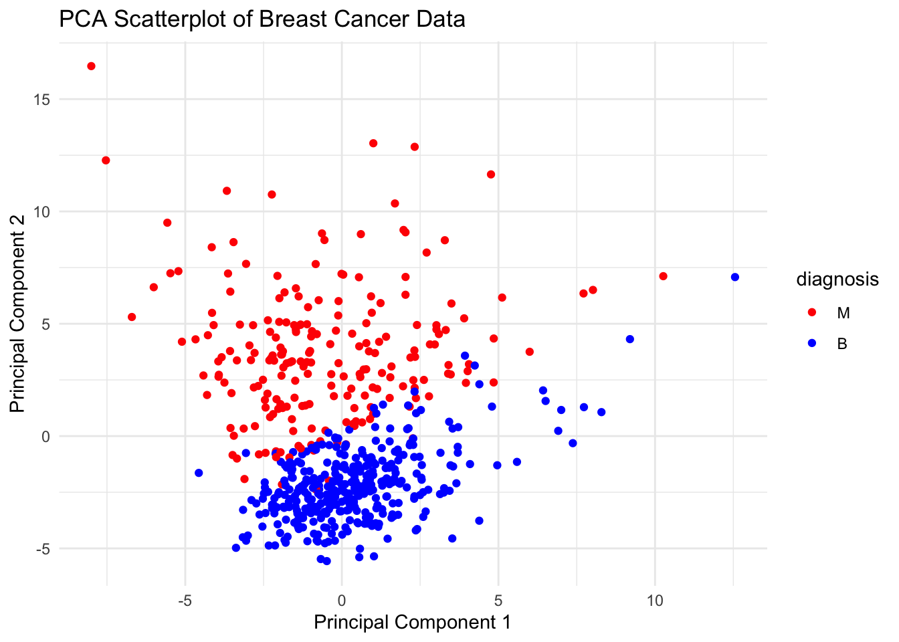

# Load in required libraries
library(ggplot2)
library(dplyr)
library(corrplot)
library(tidyverse)Applications of Anomaly and Outlier Detection
Unveiling the Unusual: A Data Odyssey into Anomaly Detection and Outlier Exploration
setwd("~/Documents/UCSB/2023-2024/Fall 2023/PSTAT 197/Projects/Final Project/vignette-anomaly-detection/Data")
breast_cancer_data <- read_csv("bc_data_prepared.csv")Executive summary
As the names suggest, outlier and anomaly detection are methods meant to identify data points that appear to fall outside the normal range. These anomalous observations are often rare and present patterns not present for standard data points. Much like in regular machine learning models, anomaly detection methods fall into 3 main categories; supervised, unsupervised, and semi-supervised models.
Methods of interest
In this vignette, we will demonstrate the efficacy of a number of different models and their consequent ability to identify outliers that may be present in the data.
- Isolation Forests
- Local Outlier Factors
- One class SVM
Data description
The data set in this vignette has been drawn from the Diagnostic Wisconsin Breast Cancer Database and includes a list of 30 features from 569 patients computed from a digitized image of a fine needle aspirate (FNA) of breast mass. The features describe the characteristics of the nuclei present in the image.
# Count plot of each diagnosis class
bc_count <- breast_cancer_data %>%
mutate(diagnosis = factor(ifelse(diagnosis == "M", "Malignant", "Benign"))) %>%
ggplot(aes(x = diagnosis)) +
geom_bar() +
labs(x = "Diagnosis",
y = "Number of Patients",
title = "Breast Cancer Diagnosis Distribution")
bc_count
Observations in the data set are classified into 2 categories, benign or malignant. In this data set, 357 of the patients received a benign diagnosis, while 212 received a malignant diagnosis.
Though there are 30 numeric features in total, only ten unique features are computed from each cell nucleus: radius, texture, perimeter, area, smoothness, compactness, concavity, concave points, symmetry, and fractal dimension. The mean, standard error, and lowest value for each of the ten unique features are recorded.
# Variable correlation matrix of numeric features
corrplot(corr = cor(breast_cancer_data[-c(1,2)]))
Most features tend to have positive correlations with one another, typically ranging from negligible to moderate. Of the unique features, radius, perimeter, and area tend to have very high positive correlations with each other, which makes sense because the radius is used to calculate the perimeter and area. Concavity and concave points also share a very high positive correlation with each other, which makes sense because concave points is similar to concavity but measures the number of concavities instead of the magnitude. The concave points feature also has a high positive correlation with radius, perimeter, and area, and compactness has a high positive correlation with concavity and concave points. Both smoothness and fractal dimension have the most notable cases of negative correlations, seen with radius, perimeter, and area in both cases, though the negative correlations are low at best.
Isolation Forests
Isolation Forests represent a novel approach in anomaly detection, focusing on isolating anomalies instead of identifying normal data patterns. The method constructs a ‘forest’ of random binary decision trees, based on the principle that anomalies are easier to isolate from the rest of the sample. In an Isolation Forest, each tree aims to isolate data points by randomly selecting a feature and a split value, with the path length—the number of splits needed to isolate a data point—being the key metric. Anomalies, being few and distinct, typically require fewer splits for isolation, which is reflected in their inverse relationship with the anomaly score. For constructing these trees, given a dataset \(X = \{x_1, \dots, x_n\}\) where each \(x_i\) is a point in a \((d)\)-dimensional space, a subset \((X' \subset X)\) is used. The trees are built by recursively partitioning \((X')\) through random selection of an attribute $(q)$ and a split value $(p)$, resulting in a binary tree where each internal node represents a division based on \((q < p)\). This process continues until a node either contains a single instance or all instances at the node are identical, effectively leveraging the trees’s capacity to progressively narrow down the space in which data points reside, making it highly effective for identifying anomalies that are rare and distinct.
#install.packages("isotree")
library(isotree)
# Split the data set into benign and malignant
benign_data <- subset(breast_cancer_data, diagnosis == 'B')
malignant_data <- subset(breast_cancer_data, diagnosis == 'M')
# Remove the 'diagnosis' column for modeling
benign_data <- benign_data[,-which(names(benign_data) == "diagnosis")]
malignant_data <- malignant_data[,-which(names(malignant_data) == "diagnosis")]To to an isolation forest, we are first going to split the data into benign and malignant, this is because we are going to train the model for the benign tumors and then test it against the malignant tumors. Hypothetically this model should detect everything as an outlier.
# Train the model on benign data
set.seed(123)
model <- isolation.forest(benign_data, ntrees=100)
# Apply the model to malignant data]
malignant_scores <- predict(model, malignant_data)
# Determine outliers
outliers <- malignant_scores > 0.5
# Calculate the accuracy
true_positive <- sum(outliers)
false_negative <- length(outliers) - true_positive
# Accuracy
accuracy <- true_positive / length(outliers)
# Print the results
print(paste("Number of true positives (malignant identified as outliers):", true_positive))[1] "Number of true positives (malignant identified as outliers): 180"print(paste("Number of false negatives (malignant not identified as outliers):", false_negative))[1] "Number of false negatives (malignant not identified as outliers): 32"print(paste("Accuracy:", accuracy))[1] "Accuracy: 0.849056603773585"The next thing we are going to do is use the isoforest library to create an isolation forest for the benign data. When we predict against the malignant data, we generate anomaly scores, the higher they are the more anomalous they are. Typically, we determine outliers at a value greater than 0.5 so we filter by that and then calculate the number of outliers (true-positives) and the number of false negatives (those that were determined as not outliers even though they should be). We can then calculate the accuracy of the model.
The output from the isolation forest model indicates that it has correctly identified 180 malignant cases as outliers, which are referred to as true positives. This suggests that the model is effectively distinguishing between benign and malignant cases based on the patterns learned from the benign data it was trained on. However, the model has also yielded 32 false negatives, which are malignant cases that the model failed to flag as outliers. Overall, the model has achieved an accuracy of approximately 84.91%, which quantifies its ability to correctly identify malignant cases as outliers.
Visualization
library(ggplot2)
# Convert scores to a data frame for ggplot
scores_df <- data.frame(score = malignant_scores)
# Plot
ggplot(scores_df, aes(x = seq_along(score), y = malignant_scores)) +
geom_point() +
geom_hline(yintercept = 0.5, linetype = "dashed", color = "red") +
theme_minimal() +
labs(title = "Anomaly Scores with Threshold",
x = "Data Point",
y = "Anomaly Score")As mentioned before, we generated anomaly scores for each of the points in the data, what we can do is plot it on a scatter plot. With a threshold of 0.5 we can see all the data above and below the points.
library(RColorBrewer)
# Perform PCA on the data
pca_result <- prcomp(malignant_data[,-c(1, 2)], scale = TRUE)
# Get the first two principal components and add anomaly scores
pca_data <- data.frame(PC1 = pca_result$x[, 1], PC2 = pca_result$x[, 2], Score = malignant_scores)
# Creating the scatter plot
ggplot(pca_data, aes(x = PC1, y = PC2, color = malignant_scores)) +
geom_point(alpha = 0.7) +
scale_color_gradientn(colors = brewer.pal(9, "Reds")) +
theme_minimal() +
labs(title = "PCA Scatter Plot with Anomaly Scores",
x = "Principal Component 1",
y = "Principal Component 2")##Local Outlier
Local Outlier Factor (LOF) works by identifying outliers through examining the local density (average distance to k nearest neighbors) of each data point and comparing it to the density of its neighbors. Outliers are points that exceed an arbitrary threshold and have lower local density than their neighbors, indicating that they are in less dense regions of the data.
To begin implementation, it is ideal to install the dbscan package which will be used to calculate the LOF value:
library(dbscan)It is also nice to look at the dimensions and a tibble of our dataset so we are familiar with it:
dim(breast_cancer_data)[1] 569 32#Tibble
breast_cancer_data %>% tibble()# A tibble: 569 × 32
id diagnosis radius_mean texture_mean perimeter_mean area_mean
<dbl> <chr> <dbl> <dbl> <dbl> <dbl>
1 842302 M 18.0 10.4 123. 1001
2 842517 M 20.6 17.8 133. 1326
3 84300903 M 19.7 21.2 130 1203
4 84348301 M 11.4 20.4 77.6 386.
5 84358402 M 20.3 14.3 135. 1297
6 843786 M 12.4 15.7 82.6 477.
7 844359 M 18.2 20.0 120. 1040
8 84458202 M 13.7 20.8 90.2 578.
9 844981 M 13 21.8 87.5 520.
10 84501001 M 12.5 24.0 84.0 476.
# ℹ 559 more rows
# ℹ 26 more variables: smoothness_mean <dbl>, compactness_mean <dbl>,
# concavity_mean <dbl>, `concave points_mean` <dbl>, symmetry_mean <dbl>,
# fractal_dimension_mean <dbl>, radius_se <dbl>, texture_se <dbl>,
# perimeter_se <dbl>, area_se <dbl>, smoothness_se <dbl>,
# compactness_se <dbl>, concavity_se <dbl>, `concave points_se` <dbl>,
# symmetry_se <dbl>, fractal_dimension_se <dbl>, radius_worst <dbl>, …The first step to take is to create a dataframe of the patient ID and the actual diagnosis. This will be concatenated with the predicted diagnosis values later to determine the prediction quality of the model:
actual_id_diagnosis <- breast_cancer_data[,c(1,2)]The function lof saves a lot of time for us and allows us to quickly produce lof values for all 569 observations. Follow the code below to reproduce the LOF model:
#Make data set as a dataframe without character variable for scaling
scaled_bc_data <- as.data.frame(scale(breast_cancer_data[,-c(1,2)]))
#Use LOF function on the 569 observations to produce ratio of density around that specific observation vs average density of all point around it.
lof_result <- lof(scaled_bc_data)
# Adjust the threshold as needed
threshold <- 1.25
#Create an object that displayed logical values for whether or not the predicted LOF value is greater than or less than the threshold parameter
outliers <- lof_result > thresholdRun the code below to display a plot of the outliers flagged by the LOF model.
Try and mess around with the threshold value using the code above.(hint: The LOF value is a ratio between the average density around a given point and the average density of the points around it!) Use the plot below to visualize the changes:
#Visualize Outliers
plot(lof_result, pch = 19, col = ifelse(outliers, "red", "blue"),
main = "LOF Outlier Detection", xlab = "Data Point", ylab = "LOF Score")
legend("topright", legend = c("Outlier", "Inlier"), col = c("red", "blue"),
pch = 19)Talk with your classmates: How does increasing and decreasing the threshold value change the number of outliers?
Use the code below to append the predicted outliers to a DataFrame of the actual outliers:
#Append the outlier results to the actual diagnosis of the data set
actual_id_diagnosis$pred_diag <- outliers
#Prediction vs Actual Table
actual_id_diagnosis %>%
select(diagnosis, pred_diag) %>%
table() pred_diag
diagnosis FALSE TRUE
B 306 51
M 167 45Look at the outputted table. What do you notice?
One Class SVM
# Install libraries for One-class SVM
library(tinytex)
library(readr)
library(tidyverse)
library(e1071)
library(caret)
library(NLP)
library(tm)PCA For Visualization
We will use the common algorithm of PCA in order to visualize the separation of the two clusters. We Hope to see that there is indeed a visual difference between the Malignant and Benign class of tumors.
# let's first relabe our interest class into 1s and 0s
breast_cancer_data <- breast_cancer_data %>%
mutate(diagnosis = ifelse(diagnosis == 'B', 1, 0))
# Separate predictors and response variable
X <- breast_cancer_data[, -which(names(breast_cancer_data) == "diagnosis")]
y <- breast_cancer_data$diagnosis
# Perform PCA
pca_result <- prcomp(X, scale. = TRUE)
# Extract the first two principal components
pca_data <- as.data.frame(pca_result$x[, 1:2])
pca_data$diagnosis <- factor(y, levels = c(0, 1), labels = c("M", "B"))
# Create a scatter plot using the first two principal components
ggplot(pca_data, aes(x = PC2, y = PC1, color = diagnosis)) +
geom_point() +
scale_color_manual(values = c("red", "blue")) +
labs(title = "PCA Scatterplot of Breast Cancer Data", x = "Principal Component 1", y = "Principal Component 2") +
theme_minimal()
We can clearly see that the two groups should be able to be classified with unsupervised learning methods. In this case, we will use one-class SVM.
The method of One Class Support Vector Machines tries to find the optimal boundary which separates normal data points from their abnormal counterparts by finding the high dimensional hypersphere which can surround the distribution of high density points. Once we have our trained hypersphere, then points within the hypershere will get classified as 1 or being a “normal data point” while points that are classified as outside the circle will get classified as -1 or as an outlier.
Mathematical Formulation
Remember that our main goal is finding the hypershpere which serparates our data from outliers the best. The algorithm can be formed as an optimization problem making the algorithm something we like to call a turn key algorithm. This means we do not have to play with a lot of parameters to find this boundary. Our goal is to minimize the volume of the hypershpere. This makes intuitive sense as we want to minimize how many outliers actually go within our circle. This results in a binary function function which captures regions in the input space where the probability density of the data lives.
In order to find the smallest hypersphere our goal is to find a sphere with radius r and center c which consists of most data points. We can write this mathematically as
\[ min_{r,c} \text{ } r^2 \\\text{subject to, } \left\| \phi (x_{i}) - c \right\|^2 \le r^2 \\\forall i = 1,2,…,n \]
The above formulation is a little too restrictive, meaning that it is extremely sensitive to outliers. The problem can be then optimized to the form below which is much more flexible.
\[ min_{r,c,\zeta} \text{ } r^2 + \frac{1}{vn} \sum_{i=1}^{n} \zeta_i \\\text{subject to, } \left\|\phi(x_i)-c\right\|^2 \le r^2 + \zeta_i \\\forall i = 1,2,…,n \]
Implementation
We will now begin with the implementation of our One Class SVM. Remember that our outliers are the Malignant Tumors. With the typical SVM model, we define something called a kernel. Basically, we project our data onto an n-dimensional space and find a linear boundary. This boundary will be a soft margin that allows for some slack. We then return our data to the original dimension where the decision boundary will be non-linear. The above formulation is equivalent when using a Gaussian (radial) kernel. The proof is not included here, but a reference to both papers will be included below. The RBF kernel projects our data onto a higher space using the equation:
\[ e^{(-\gamma\left| u-v\right|^2)} \]
Then we optimize to find the optimal margin for a linear boundary. The optimization problem is different than above but note that RBF will result in an equivalent solution. In order to prove this analytically we run a two class SVM on our PCA data to show how we can get a hypersphere with the RBF kernel. Below we train a svm model on our entire training data to see the result of our boundary.
svm_model_PCA <- svm(diagnosis ~ ., data = pca_data,
kernel = 'radial')
plot(svm_model_PCA, pca_data)We see that the radial basis function is indeed able to seperate the two classes pretty succesfully. The boundary does resemble a ellipsoid shape and in higher dimensions this can certainly be a form of a hypersphere!
Outline
Step 1.) Train our model on the majority class (Benign Tumors)
Step 2.) Predict on the entire training set
Step 3.) Evaluate the process
Training The Model
We will be using the e1071 package to implement the one class SVM kernel.
The following chunk simply creates our variable of interest, diagnosis into a binary column. Then it partitions the data into the majority class and the testing set consisting of the Malignant class. We then build our model with default parameters.
training_data <- breast_cancer_data %>%
filter(diagnosis == 1)
testing_data <- breast_cancer_data %>%
filter(diagnosis == 0)
trainpredictors <- training_data[, -which(names(training_data) =="diagnosis")]
testpredictors <- testing_data[, -which(names(testing_data) == "diagnosis")]
svm.model <- svm(trainpredictors, y = NULL, type = 'one-classification',
nu = 0.10, scale = TRUE, kernel = "radial")
summary(svm.model)
Call:
svm.default(x = trainpredictors, y = NULL, scale = TRUE, type = "one-classification",
kernel = "radial", nu = 0.1)
Parameters:
SVM-Type: one-classification
SVM-Kernel: radial
gamma: 0.03225806
nu: 0.1
Number of Support Vectors: 59
Number of Classes: 1We see that the number of support vectors is 59. These are the vectors that are highly influential with creating our margin of separation.
Run the code below to predict and build confusion matrices. We will also see the accuracy of each training and test set.
svm.predtrain <- predict(svm.model, trainpredictors)
svm.predtest <- predict(svm.model, testpredictors)
confTrain <- table(Predicted = svm.predtrain, Reference =
training_data$diagnosis)
confTest <- table(Predicted = svm.predtest, Reference =
testing_data$diagnosis)
print("Confusion Matrix for Training Set:")[1] "Confusion Matrix for Training Set:"print(confTrain) Reference
Predicted 1
FALSE 38
TRUE 319print("Confusion Matrix for Testing Set:")[1] "Confusion Matrix for Testing Set:"print(confTest) Reference
Predicted 0
FALSE 198
TRUE 14accuracy_train <- sum(svm.predtrain == training_data$diagnosis) / length(training_data$diagnosis) * 100
accuracy_test <- sum(svm.predtest == testing_data$diagnosis) / length(testing_data$diagnosis) * 100
cat("Accuracy on Training Set: ", accuracy_train, "%\n")Accuracy on Training Set: 89.35574 %cat("Accuracy on Testing Set: ", accuracy_test, "%\n")Accuracy on Testing Set: 93.39623 %The results on the testing set turned out to be extremely good. We see that the model was able to classify 94% Percent of the data correctly when we pass in the data of just malignant. We can confirm that our model is verified since it did not just predict that every observation is Malignant. Since there is some error we can be assured that the model was able to capture the distribution of Benign tumors!